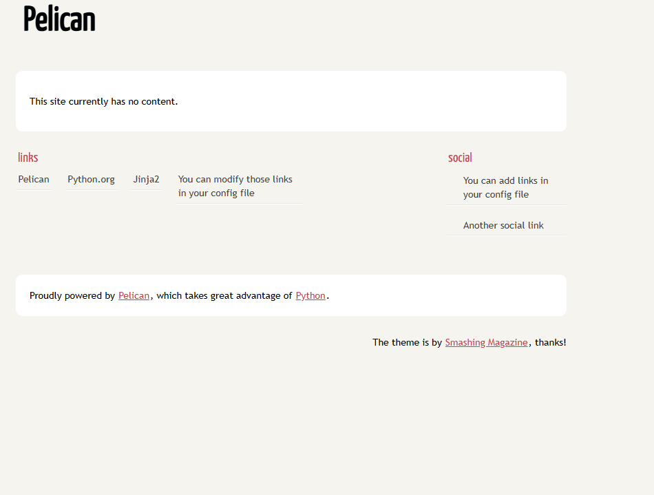

The answer is simple: I used Pelican. But what exactly is Pelican?

Pelican is a static site generator that allows you to create websites quickly and easily without needing to write HTML or CSS. Instead, you can choose from a variety of themes provided by the Pelican community. Pelican is written in Python, which I consider one of the best programming languages due to its simplicity and speed. With Pelican, you can write your content in Markdown and use a simple CLI tool to generate your site. These are just a few advantages of Pelican; you can find more information on the Pelican website.
It’s clear why I chose Pelican to build my site. But I haven’t yet explained how I actually made it!
The process was straightforward. After choosing Pelican, the next step was selecting a theme. However, I didn’t find
any that I particularly liked, so I decided to customize my own theme. I based it on the “simple” theme, which is
specifically designed to be a starting point for creating custom themes. The simple theme provides a structure that you
can modify to create a design that suits your needs.
Great! Now, let me walk you through the first steps to generate a Pelican site:
1º Set up a Python virtual environment for your project:
mkdir pelican-site && cd pelican-site
python3 -m venv venv
2º Activate the virtual environment:
cd venv/Scripts
activate
3º Install Pelican:
pip install "pelican[markdown]"
4º Run the quickstart setup. This will let you configure the generator to fit your needs:
pelican-quickstart
Now the site generator will ask you a series of questions to set up as your preferences:
Where do you want to create your new web site? [.]
What will be the title of this web site?
Who will be the author of this web site?
What will be the default language of this web site? [es]
Do you want to specify a URL prefix? e.g., https://example.com (Y/n)
What is your URL prefix? (see above example; no trailing slash)
Do you want to enable article pagination? (Y/n)
How many articles per page do you want? [10]
What is your time zone? [Europe/Rome]
Do you want to generate a tasks.py/Makefile to automate generation and publishing? (Y/n)
Do you want to upload your website using FTP? (y/N)
Do you want to upload your website using FTP? (y/N)
Do you want to upload your website using SSH? (y/N)
Do you want to upload your website using Dropbox? (y/N)
Do you want to upload your website using S3? (y/N)
Do you want to upload your website using Rackspace Cloud Files? (y/N)
Do you want to upload your website using GitHub Pages? (y/N)
We’ve successfully generated our site with Pelican. If you would like to view the webiste, use these CLI comands:
pelican content
pelican --listen
By default the pelican generator use the port 8000 to serve the website. Just copy and paste the url that Pelican provides into your browser, and you should see something like this:

And that’s it! Remember this is just a simple example. In the next post, we’ll explore more actions we can take with Pelican, such as creating pages and articles with Markdowns, using various themes, and customizing our own.